专题4.1 线段、射线、直线


教学目标 | 1. 结合现实情境理解线段、射线、直线的概念，明确三者的联系与区别，会用规范方式表示。 2. 掌握“两点确定一条直线”的几何事实，能结合实例解释其应用。 3. 能运用相关知识解决简单实际问题，通过观察概括发展抽象思维与表达能力。 |
教学重难点 | 1.重点 （1）核心是线段、射线、直线的概念辨析，包括端点个数、延伸性等特征及规范表示方法。 （2）关键是理解并掌握“两点确定一条直线”的基本事实及其在生活中的应用。 2.难点 （1）难点在于准确区分射线的表示方法，因端点和延伸方向不同，相同字母表示的射线可能不同。 （2）难点在于灵活运用概念和性质解决计数（如数射线、线段条数）等实际问题。 |

知识点01 线段、射线、直线的概念
1.线段的表示也有两种：一个小写字母或用端点的两个大写字母.但前面必须加“线段”两字，如：线段a；线段AB.
2.射线的表示同样有两种：一个小写字母或端点的大写字母和射线上的要给大写字母，前面必须加“射线”两字
3.直线的表示有两种：一个小写字母或两个大写字母.但前面必须加“直线”两字，如：直线
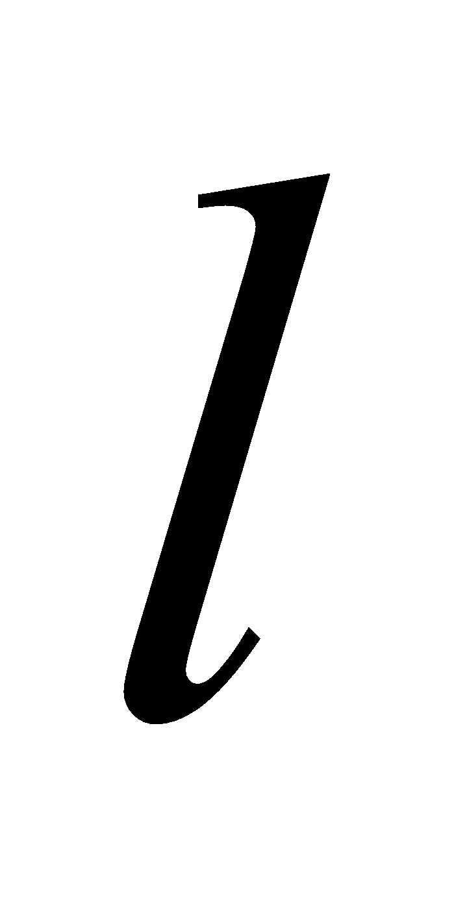
；直线m，直线AB；直线CD基本概念：
名称 | 直线 | 射线 | 线段 |
图形 |
|
|
|
端点个数 | 无 | 一个 | 两个 |
表示法 | 直线 直线AB（BA） | 射线 射线AB | 线段 线段AB（BA） |
作法叙述 | 作直线 作直线AB | 作射线 作射线AB | 作线段 作线段AB 连接AB |
延长 | 向两端无限延长 | 向一端无限延长 | 不可延长 |

【即学即练1】
1．下列说法错误的是（ ）
A． 直线l经过点A B．
直线l经过点A B． 点C在线段
点C在线段 上
上
C． 射线 与线段有公共点 D．
与线段有公共点 D． 直线a，b相交于点A
直线a，b相交于点A
【答案】B
【知识点】直线、射线、线段的联系与区别、点与线的位置关系、直线相交的交点个数问题
【分析】根据点和直线的位置关系，相交线的有关内容判断即可．
【详解】解：A、由图可得，点A在直线l上，故直线l经过点A，故本选项不符合题意；
B、由图可得，点C在线段的上方，故点A不在线段上，故本选项符合题意；
C、由图可得，射线与线段有交点，故射线与线段有公共点，故本选项不符合题意；
D、由图可得，点A为直线a、b的公共点，故直线a、b相交于点A，故本选项不符合题意．
故选：B．
2．根据如图所示的图形填空：

(1)点B在直线 _________，点C在直线_________；
_________，点C在直线_________；
(2)点E是直线与_________直线_________的交点，直线 与直线
与直线 相交于点_________；
相交于点_________；
(3)过点A的直线有_________条，分别是__________________．
【答案】(1)上，外
(2)
(3)3，直线 ，直线
，直线 ，直线
，直线
【分析】本题考查了直线、射线、线段，熟练掌握点与直线的位置关系是解题的关键．
（1）观察图形，根据点与直线的位置关系进行判断即可；
（2）确定经过点E的直线是哪两条即可得出结论；观察图形确定直线与直线的交点即可；
（3）观察图形确定过点A的直线即可解答．
【详解】（1）解：点B在直线上，点C在直线外，
故答案为：上，外；
（2）解：点E是直线与直线 的交点，直线与直线相交于点F，
的交点，直线与直线相交于点F，
故答案为：；
（3）解：过A点的直线有3条，分别是直线，直线，直线，
故答案为：3，直线，直线，直线．
知识点02 直线的性质
经过两点有一条直线，并且只有一条直线.简单地：两点确定一条直线. 两条直线相交，只有一个交点.
【即学即练2】
1．如图，建筑工人砌墙时，经常先在两端立桩拉线，然后沿着线砌墙，读用所学的数学知识解释它这样操作的原因是

【答案】两点确定一条直线
【知识点】两点确定一条直线
【分析】此题主要考查直线的性质：两点确定一条直线，熟记性质是解题的关键．
【详解】建筑工人砌墙时经常先在两端立桩、拉线，然后沿着线砌出笔直的墙，其依据的基本事实是两点确定一条直线．
故答案为：两点确定一条直线．

题型01 线段、射线、直线的联系与区别
【典例1】（24-25七年级上·河南新乡·阶段练习）下列直线的表示方法正确的是（ ）
A． B．
B．
C． D．
【答案】B
【分析】本题考查了直线的表示方法．解题的关键在于熟练掌握：直线有两种表示方法： ①可以用一个小写字母表示，如直线a； ②用直线上任意两点的大写字母表示，如直线 或直线
或直线 ．根据直线的表示方法作答即可．
．根据直线的表示方法作答即可．
【详解】解：由题意知，图中直线的表示方法正确的是直线．
故选：B．
【变式1】（24-25七年级上·全国·课后作业）如图，下列说法错误的是（ ）．

A．图中共有2条线段
B．直线与直线 表示的是同一条直线
表示的是同一条直线
C．射线与射线表示的是同一条射线
D．线段与线段 表示的是同一条线段
表示的是同一条线段
【答案】A
【分析】本题考查了直线、射线、线段的定义，是基础题，熟记概念是解题的关键．
根据直线、射线、线段的定义对各小题分析判断即可得解．
【详解】解：A．图中有线段、线段 、线段，共3条线段，故错误，符合题意；
、线段，共3条线段，故错误，符合题意；
B．直线与直线表示的是同一条直线，正确，不符合题意；
C．射线与射线表示的是同一条射线，正确，不符合题意；
D．线段与线段表示的是同一条线段，正确，不符合题意．
故选：A．
【变式2】（24-25七年级上·全国·随堂练习）下列说法正确的是（ ）
A．射线和射线是同一条射线
B．延长线段和延长线段的含义是相同的
C．延长直线
D．直线与直线是同一条直线
【答案】D
【分析】本题考查了直线、射线、线段的性质，掌握相关知识是解题的关键．
根据相关知识逐项分析判断即可，
【详解】解： 、射线和射线的端点不同，不是同一条射线，原选项说法错误，不符合题意；
、射线和射线的端点不同，不是同一条射线，原选项说法错误，不符合题意；
 、延长线段和延长线段的含义是不相同的，原选项说法错误，不符合题意；
、延长线段和延长线段的含义是不相同的，原选项说法错误，不符合题意；
 、直线向两端无限延伸，因此直线不可延长，原选项说法错误，不符合题意；
、直线向两端无限延伸，因此直线不可延长，原选项说法错误，不符合题意；
 、直线与直线是同一条直线，原选项说法正确，符合题意；
、直线与直线是同一条直线，原选项说法正确，符合题意；
故选：．
【变式3】（24-25六年级下·山东泰安·期末）下列说法：（1）两点确定一条直线；（2）画一条射线，使它的长度为 ；（3）线段和线段是同一条线段；（4）射线和射线是同一条射线；（5）直线和直线是同一条直线．其中错误的有（ ）个
；（3）线段和线段是同一条线段；（4）射线和射线是同一条射线；（5）直线和直线是同一条直线．其中错误的有（ ）个
A．1个 B．2个 C．3个 D．4个
【答案】B
【分析】本题考查了直线、射线、线段，掌握直线、射线、线段的定义是正确判断的关键．根据线段的性质，射线、直线、线段的定义逐项进行判断即可．
【详解】解：（1）两点确定一条直线，因此（1）正确；
（2）由于射线是无限长的，无法度量其长度，因此（2）不正确；
（3）线段和线段是同一条线段，因此（3）正确；
（4）射线和射线是两条不同的射线，因此（4）不正确；
（5）直线和直线是同一条直线，因此（5）正确，
综上所述，错误的结论有（2）（4），共2个，
故选：B．
题型02 点与线的位置关系
【典例2】（24-25七年级上·河北唐山·期末）正方形网格中，直线 经过的点是（ ）
经过的点是（ ）
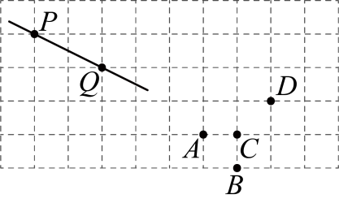
A．点 B．点
B．点 C．点
C．点 D．点
D．点
【答案】C
【分析】此题考查了网格作图，延长线段即可得到答案．
【详解】解：如图，可知直线经过的点是点，
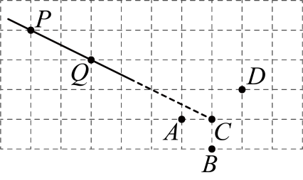
故选：C．
【变式1】（24-25七年级上·重庆渝中·期末）如图，直线 与直线
与直线 相交于点
相交于点 ，下列说法错误的是（ ）
，下列说法错误的是（ ）

A．点在直线外 B．点 在直线上
在直线上
C．点在线段 的反向延长线上 D．直线与线段相交于点
的反向延长线上 D．直线与线段相交于点
【答案】B
【分析】本题考查了线段，射线，直线的关系．根据线段，射线，直线的特点判断即可．
【详解】解：A、点在直线外，说法正确，本选项不符合题意；
B、点在直线外，原说法不正确，本选项符合题意；
C、点在线段的反向延长线上，说法正确，本选项不符合题意；
D、直线与线段相交于点，说法正确，本选项不符合题意；
故选：B．
【变式2】（2024七年级上·全国·专题练习）如图，下列说法中，错误的是（ ）
A．点B在直线 上
上
B．点A在直线外
C．点C在线段 上
上
D．点M在线段 的延长线上
的延长线上
【答案】D
【分析】本题主要考查直线、射线、线段，解题的关键是掌握直线和线段的概念．根据直线、线段的概念求解即可．
【详解】A．点B在直线上，正确，不符合题意；
B．点A在直线外，正确，不符合题意；
C．点C在线段上，正确，不符合题意；
D．点M在线段的延长线上，原表述不正确，符合题意；
故选：D．
【变式3】（24-25七年级上·河北秦皇岛·期末）如图，下面说法中错误的是（ ）
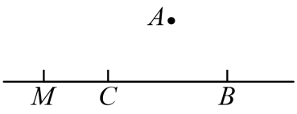
A．点B在直线上 B．点A在直线外
C．点C在线段上 D．点M在线段上
【答案】D
【分析】本题主要考查点与线的位置关系，解题的关键是掌握点与线的位置关系．根据点与线的位置关系求解即可．
【详解】解：A、点B在直线上，本选项说法正确；
B、点A在直线外，本选项说法正确；
C、点C在线段上，本选项说法正确；
D、点M在射线上，本选项说法错误．
故选：D
题型03 两点确定一条直线
【典例3】（25-26七年级上·全国·期末）如图，用两个钉子，就可以把一个横排挂钩固定在墙上，这样做的依据是 ．
【答案】两点确定一条直线
【分析】本题主要考查两点确定一条直线，熟练掌握两点确定一条直线是解题的关键；根据两点确定一条直线进行求解即可．
【详解】解：由题意可知这样做的依据是两点确定一条直线；
故答案为：两点确定一条直线．
【变式1】（24-25七年级上·贵州贵阳·阶段练习）李明值日时，发现桌子不整齐，他想了一下，先把每一列最前和最后的课桌摆好，然后再依次摆中间的课桌，一会儿就把课桌摆整齐了．这是因为 ．
【答案】两点确定一条直线
【分析】本题主要考查了直线的性质，即两点确定一条直线，熟练掌握直线的性质是解题关键．
根据直线的性质即可求解．
【详解】解：根据两点确定一条直线，
故答案为：两点确定一条直线．
【变式2】（24-25六年级下·山东烟台·期末）小明在设计黑板报时，想在黑板上画一条笔直的参照线，由于尺子不够长，他想出了如下办法：①在一根长度合适的毛线上涂满粉笔末；②由两个同学分别按住毛线的两端，并绷紧；③捏起毛线后松开，便可在黑板上弹出一条笔直的参照线．上述“画参照线”方法的依据是 ．
【答案】两点确定一条直线
【分析】本题主要考查了直线的性质：两点确定一条直线，正确把握直线的性质是解题关键．直接利用直线的性质分析得出答案．
【详解】解：上述“画参照线”方法的依据是：两点确定一条直线．
故答案为：两点确定一条直线．
【变式3】（24-25七年级上·河南平顶山·期末）墨斗是中国传统木工行业画直线的常用工具．如图，木工师傅锯木料时，一般先在木板上画出两个点，从墨斗中拉出墨线一端固定在一个点，另一端固定在另一点，绷紧并提起墨线中段，过这两点就弹出一条墨线，木工师傅这样做的道理是： ．

【答案】两点确定一条直线
【分析】本题考查了直线的性质，熟练掌握直线的性质是解题的关键．根据直线的性质，即可解答．
【详解】解：墨斗是中国传统木工行业画直线的常用工具．如图，木工师傅锯木料时，一般先在木板上画出两个点，从墨斗中拉出墨线一端固定在一个点，另一端固定在另一点，绷紧并提起墨线中段，过这两点就弹出一条墨线．木工师傅这样做的道理是：两点确定一条直线，
故答案为：两点确定一条直线．
题型04 直线相交的交点个数问题
【典例4】（24-25七年级下·甘肃陇南·期末）如图，同一平面中，三条直线交于同一点，不经过交点再画一条直线 ，则直线和原来三条直线最少有 个交点．
，则直线和原来三条直线最少有 个交点．
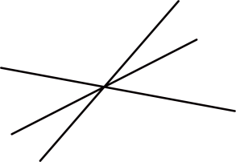
【答案】
【分析】本题考查相交线与平行线，当直线与其中一条平行时可得交点最少．掌握相交线与平行线的定义是解题的关键．
【详解】解：如图，
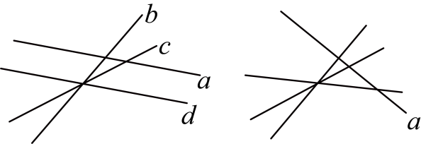
当直线平行于直线 时，直线和原来三条直线有个交点（如上左图）；
时，直线和原来三条直线有个交点（如上左图）；
当直线与已知的三条直线都不平行时，直线和原来三条直线有 个交点（如上右图）；
个交点（如上右图）；
综上所述，直线和原来三条直线最少有个交点．
故答案为：．
【变式1】（24-25七年级上·甘肃庆阳·期末）如图，两条直线相交，有1个交点，三条直线相交最多有3个交点，四条直线相交最多有6个交点，则七条直线相交最多有 个交点．

【答案】21
【分析】本题考查了图形的变化，是一道关于数字猜想的问题，关键是通过归纳与总结，得到其中的规律．
四条直线相交最多的交点个数可通过画图得出交点个数，通过继续增加直线的条数可以找出规律即可解答；
【详解】解： 如图，两条直线相交最多有1个交点，即
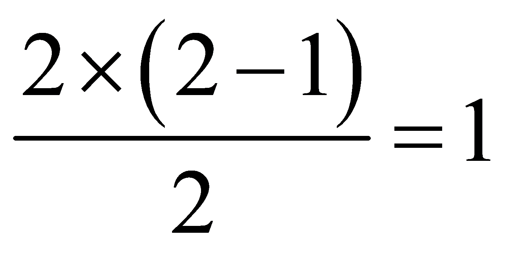
；三条直线相交最多有3个交点，即 ；
；
四条直线相交最多有6个交点，即
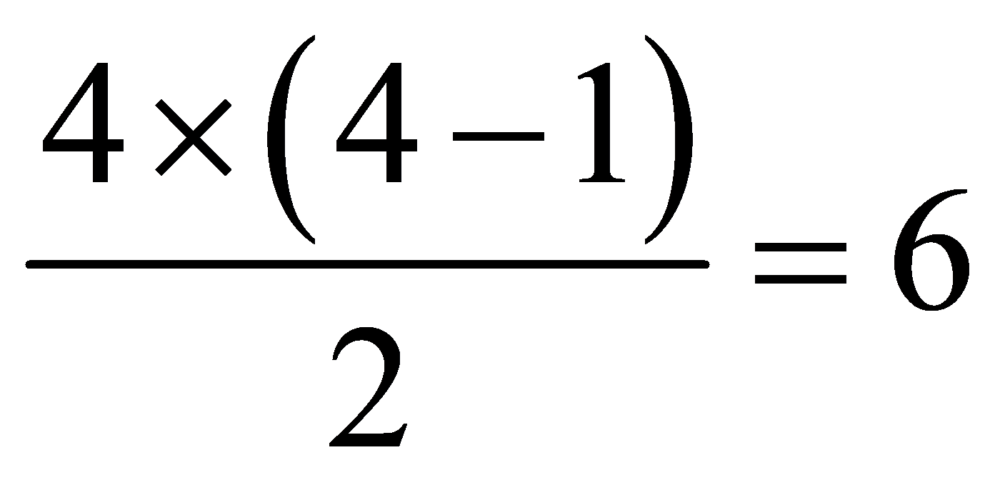
，五条直线相交最多有10个交点，即
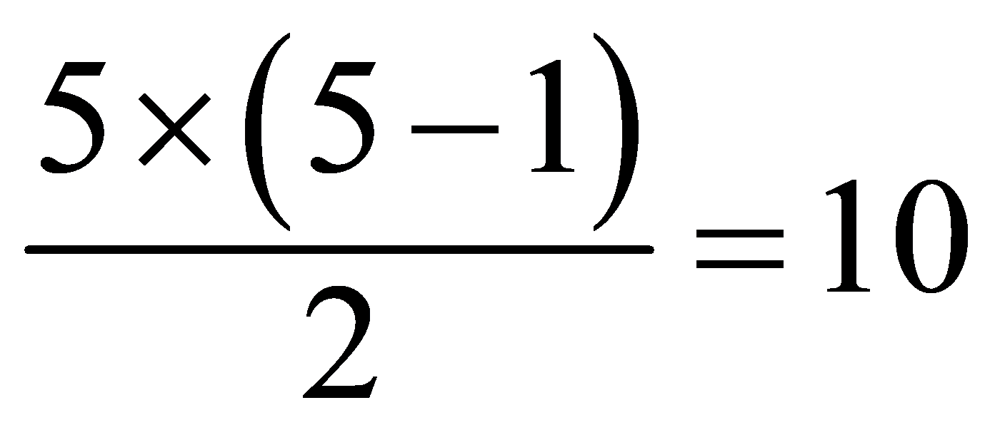
，……
∴n条直线两两相交，最多有 个交点（n为正整数，且
个交点（n为正整数，且
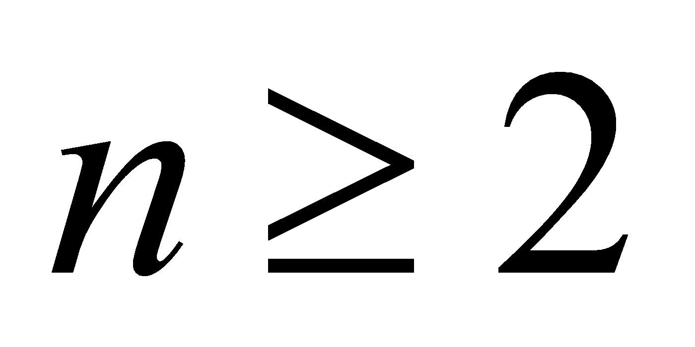
）．∴当 时，最多有
时，最多有 个交点
个交点
故答案为： ．
．
【变式2】（24-25七年级下·全国·假期作业）一平面内，3条直线两两相交，最多有3个交点；4条直线两两相交，最多有6个交点；5条直线两两相交，最多有10个交点；…；那么，10条直线两两相交，最多有 个交点．
【答案】45
【分析】此题考查的知识点是相交线，关键是此题在相交线的基础上，着重培养学生的观察、实验和猜想、归纳能力，掌握从特殊到一般猜想的方法．由已知一平面内，三条直线两两相交，最多有3个交点；4条直线两两相交，最多有6个交点；5条直线两两相交，最多有10个交点，…，总结出：在同一平面内，n条直线两两相交，则最多有 个交点，代入即可求解．
个交点，代入即可求解．
【详解】解：∵3条直线两两相交，最多有3个交点；而
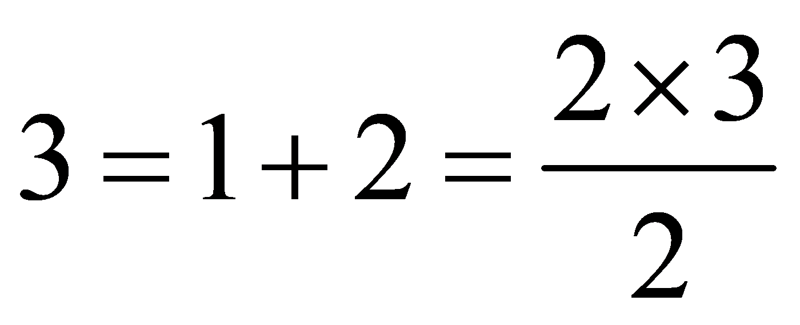
；4条直线两两相交，最多有6个交点；而 ，
，
5条直线两两相交，最多有10个交点；而 ，
，
…；
∴在同一平面内，n条直线两两相交，则最多有 个交点，
∴10条直线两两相交，交点的个数最多为  ．
．
故答案为： ．
．
【变式3】（2024七年级上·全国·专题练习）观察下列图形，阅读下面相关文字并填空：

（1）在同一平面内，两条直线相交最多有1个交点，3条直线相交最多有 个交点，4条直线相交最多有 个交点，……，像这样，8条直线相交最多有 个交点，n条直线相交最多有 个交点；
（2）在同一平面内，1条直线把平面分成2部分，两条直线最多把平面分成4部分，3条直线最多把平面分成 部分，4条直线最多把平面分成 部分，……，像这样，8条直线最多把平面分成 部分，n条直线最多把平面分成 部分．
【答案】 3 6 28 7 11 37
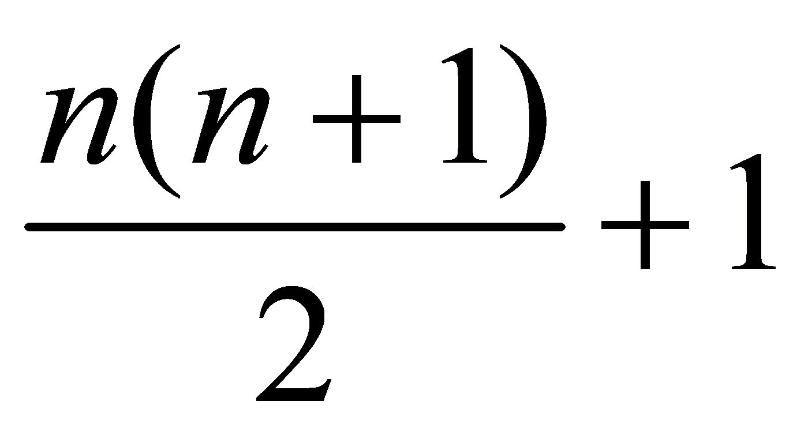
【分析】此题考查了规律型：图形的变化类，体现了从一般到特殊再到一般的认知规律，有一定的挑战性，弄清题中的规律是解本题的关键．
（1）根据图形求出两条直线相交、三条直线相交、四条直线相交时最多交点个数，总结出规律即可得出n条直线相交最多有交点的个数；
（2）根据图形求出两条直线相交、三条直线相交、四条直线相交时最多把平面分成几部分，总结出规律即可n条直线最多把平面分成几部分．
【详解】解：（1）2条直线相交有1个交点；
3条直线相交最多有
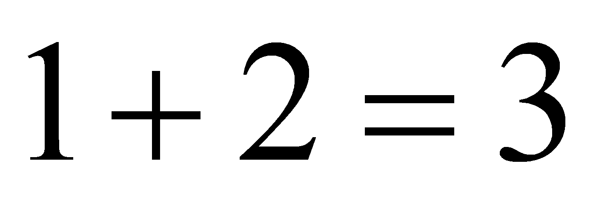
个交点；4条直线相交最多有 个交点；
个交点；
5条直线相交最多有 个交点；
个交点；
6条直线相交最多有 个交点；
个交点；
7条直线相交，最多有 个交点，
个交点，
8条直线相交，最多有 个交点，
个交点，
…
n条直线相交最多有
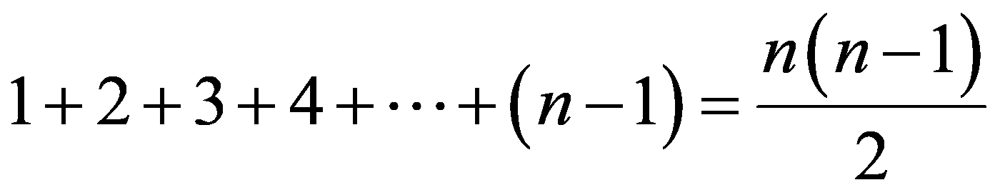
个交点；故答案为：， ，
， ，
，
（2）1条直线最多把平面分成 部分；
部分；
2条直线最多把平面分成
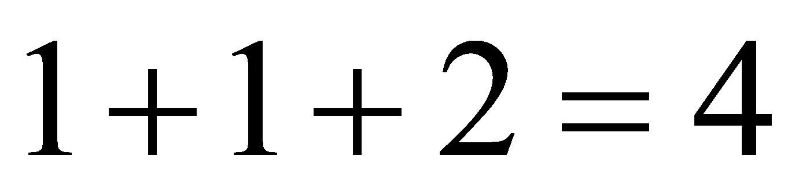
部分；3条直线最多把平面分成
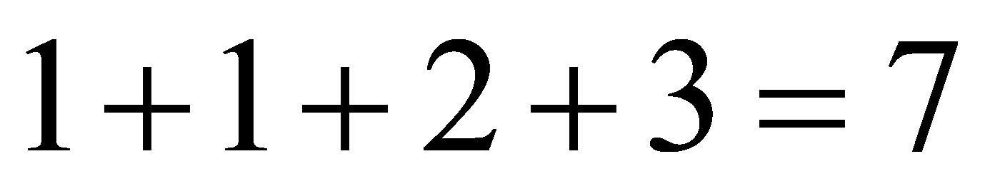
部分；4条直线最多把平面分成
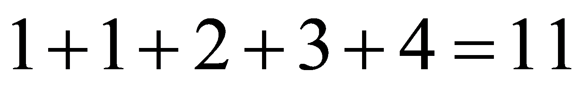
部分；5条直线最多把平面分成
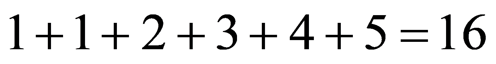
部分；6条直线最多把平面分成
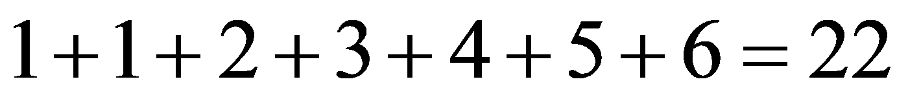
部分；7条直线最多把平面分成
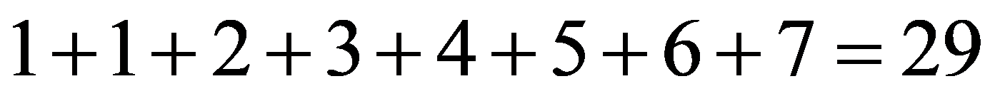
部分；8条直线最多把平面分成
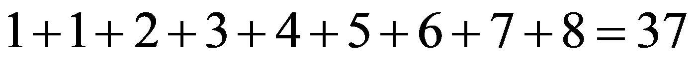
部分；…
n条直线最多把平面分成
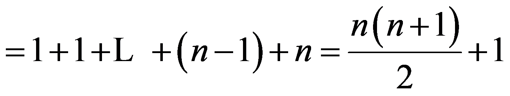
；故答案为： ，
， ，
， ，
，
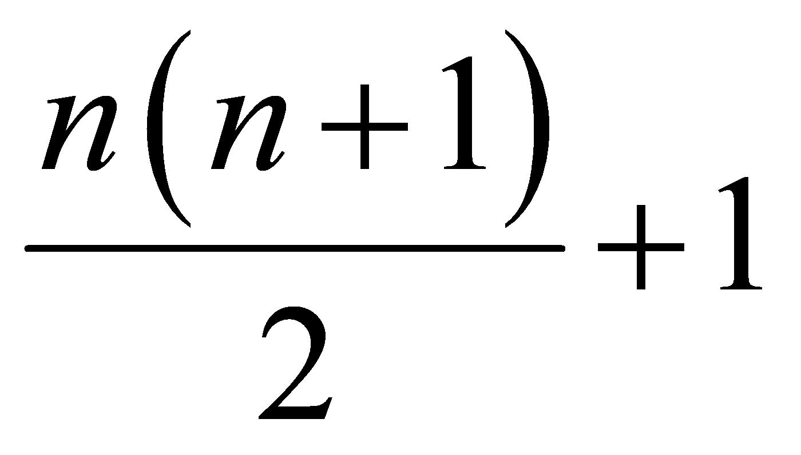
；题型05 画直线、射线、线段
【典例5】（24-25七年级上·全国·随堂练习）如图所示，已知：四点A，B，C，D．根据下列语句，画出图形．
(1)画直线 ，线段
，线段 ．
．
(2)画射线 ，相交于点O．
，相交于点O．
【答案】(1)
(2)
【分析】本题考查了直线、射线与线段，解决本题的关键是根据直线、射线与线段的定义按要求作图．
（1）根据直线没有端点、向两个方向无限延伸，线段有两个端点，不延伸，画出直线，线段 ；
；
（2）根据射线有一个端点、向一个方向无限延伸，画出射线， ，相交于点．
，相交于点．
【详解】（1）如图所示，直线，线段即为所求；
（2）如图所示，射线，即为所求．
【变式1】（24-25七年级上·贵州黔东南·期末）已知三点A，B，C，请用尺规按要求完成下列作图．（保留画图痕迹）

(1)画直线．
(2)画射线．
(3)连接并延长到D，使得 ．
．
【答案】(1)见解析
(2)见解析
(3)见解析
【分析】本题考查的是直线、射线、线段的概念与作法，掌握基本尺规作图的一般步骤是解题的关键．
（1）过点A，B作直线即可；
（2）作射线即可；
（3）连接并延长在射线上依次截取线段等于和即可．
【详解】（1）解：如图，直线即为所求；
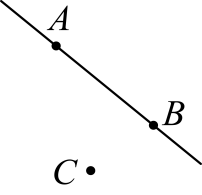
（2）如图，射线即为所求；
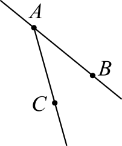
（3）如图，即为所求．
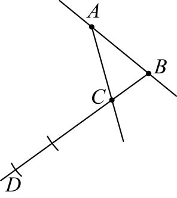
【变式2】（24-25七年级上·江苏无锡·阶段练习）如图，平面上有四个点 ，按照下列语句画图：
，按照下列语句画图：
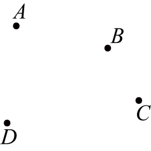
(1)画射线，直线交于E点；
(2)画线段，并将其反向延长至F，使得
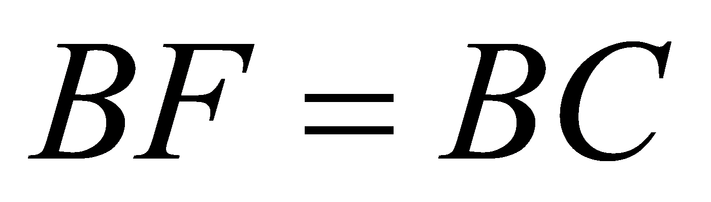
；(3)连接，在上找一点P，使得 最短．
最短．
【答案】(1)见解析
(2)见解析
(3)见解析
【分析】此题考查了线段直线射线的作图和两点之间线段最短，准确作图是关键．
（1）画射线，直线相交于E点即可；
（2）延长 ，再截取
，再截取 ，使得；
，使得；
（3）连接，交于点P，根据两点之间，线段最短即可得到答案．
【详解】（1）解：如图，射线，直线即为所求，
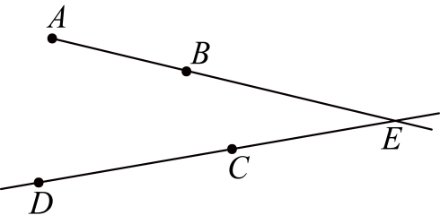
（2）如图，即为所求，
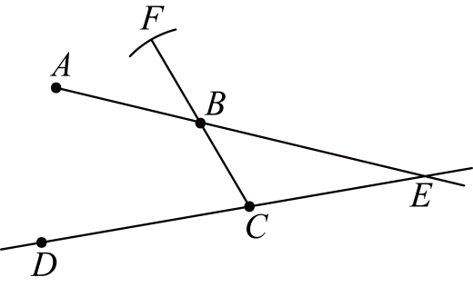
（3）如图，点P即为所求，
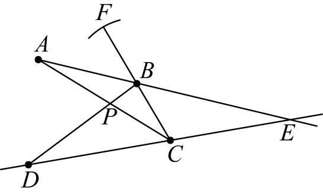
【变式3】（24-25七年级上·江苏南通·阶段练习）如图，平面上有五个点 ．按下列要求画出图形．
．按下列要求画出图形．

(1)连接；
(2)画直线交于点M；
(3)画射线；
(4)请在平面上找一点O，使它与点B，C，D，E的距离之和最小（保留作图痕迹）．
【答案】(1)见解析
(2)见解析
(3)见解析
(4)见解析
【分析】本题考查了基本的几何作图，包括连线、直线、射线的画法，以及“两点之间，线段最短”这一性质，正确理解题意并作图是解决本题的关键．
（1）根据连线的画法作图即可；
（2）根据直线的画法作图即可；
（3）根据射线的画法作图即可；
（4）根据“两点之间，线段最短”这一性质作图即可．
【详解】（1）解：作图如下：

（2）解：作图如下：

（3）解：作图如下：
（4）解：连接，
∵使它与点B，C，D，E的距离之和最小，
则，，
∴与的交点O可使它与点B，C，D，E的距离之和最小，
作图如下：

一、单选题
1．（25-26七年级上·全国·课后作业）经过三点中的任意两点，可作的直线（ ）
A．只有一条 B．一定有三条 C．有三条以上 D．有一条或者三条
【答案】D
【分析】本题主要是考查了直线，两点可确定一条直线，注意分类讨论是解决本题的关键．
分两种情况：1、三点在同一直线上时；2、三点不在同一直线上时，进行判断即可．
【详解】解：当三点在同一直线上时，只能作出一条直线；
三点不在同一直线上时，每两点可作一条，共3条；
故选D．
2．（24-25七年级上·湖南株洲·期末）经过刨平的木板上的 两个点，能弹出一条笔直的黑线，而且只能弹出一条黑线，能解释这一实际应用的数学知识是（ ）
两个点，能弹出一条笔直的黑线，而且只能弹出一条黑线，能解释这一实际应用的数学知识是（ ）

A．两点确定一条直线
B．过一点，有无数条直线
C．两点之间线段的长度叫做这两点之间的距离
D．两点之间的所有连线中，线段最短
【答案】A
【分析】本题考查了直线的性质，掌握“经过两点有且只有一条直线”是解题的关键．根据“经过两点有且只有一条直线”即可得出结论．
【详解】解：∵经过两点有且只有一条直线，
∴经过木板上的A、B两个点，只能弹出一条笔直的墨线．
∴能解释这一实际应用的数学知识是两点确定一条直线．
故选：A．
3．（20-21七年级上·山东聊城·期中）如图所示，下列结论正确的是（ ）

A．共有射线 10条，直线 10条 B．共有线段 10条，射线5条
C．共有线段 10条，直线1条 D．共有线段 10条，直线2条
【答案】C
【分析】本题主要考查了直线，射线和线段的定义及查找，解题的关键是熟练掌握相关定义．
利用直线，射线和线段的定义进行判断即可．
【详解】解：根据图象可得，共有射线10条，共有线段10条，直线1条，
故选：C．
4．（24-25七年级下·山东临沂·阶段练习）按下面语句画图：点M在直线a上，也在直线b上，但不在直线c上，直线a，b，c两两相交，图中正确的是（ ）
A．
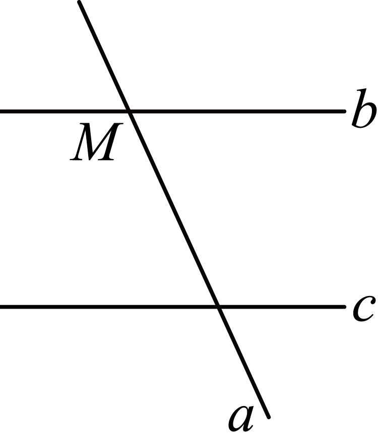
B．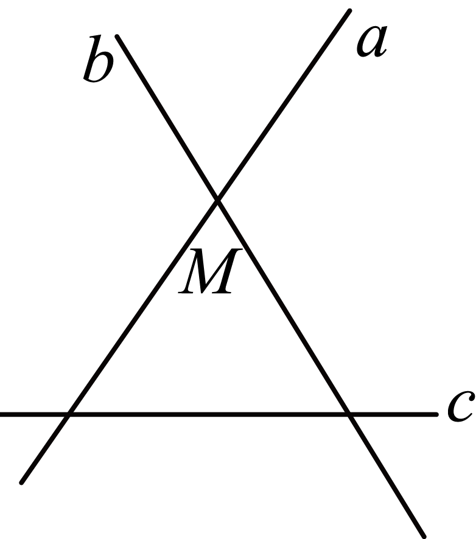
C． D．
D．
【答案】B
【分析】本题考查的是相交线、点与直线的位置关系，正确理解题意、认识图形是解题的关键．根据相交线的概念、点与直线的位置关系进行判断即可．
【详解】解：A、点 在直线
在直线 上，也在直线
上，也在直线 上，不在直线
上，不在直线 上，但直线、不相交，故本选项不符合题意；
上，但直线、不相交，故本选项不符合题意；
B 、直线，，两两相交，且点在直线上，也在直线上，不在直线上，故本选项符合题意；
C、直线，，两两相交，但点在直线上，故本选项不符合题意；
D、直线，，两两相交，但点在直线上，且不在直线上，故本选项不符合题意．
故选：B．
5．（24-25七年级上·全国·课后作业）观察图形，下列说法正确的个数是（ ）
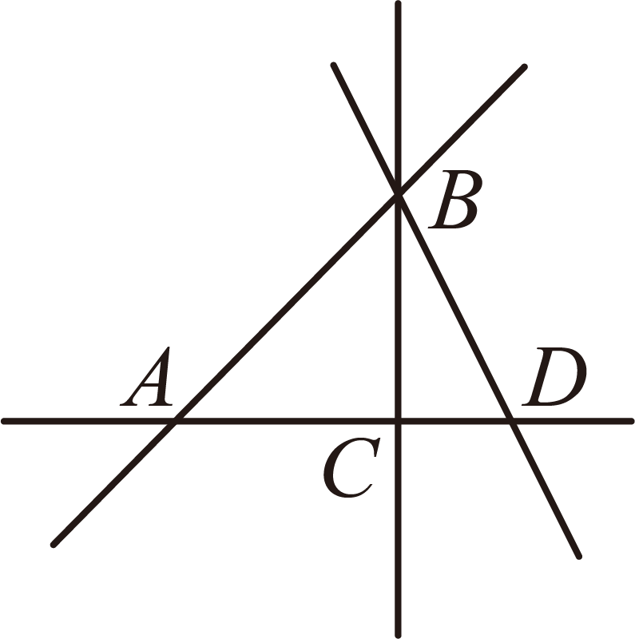
（1）直线 和直线
和直线 是同一条直线；（2）射线
是同一条直线；（2）射线 和射线
和射线 是同一条射线；（3）线段和线段
是同一条射线；（3）线段和线段 是同一条线段．
是同一条线段．
A．0个 B．1个 C．2个 D．3个
【答案】D
【分析】本题考查了直线、射线、线段的表示方法，根据直线、射线、线段表示方法逐项判断即可求解，注意直线、线段的表示方法没有方向性，射线表示方法要注意方向．
【详解】解：（1）直线和直线是同一条直线，说法正确，符合题意；
（2）射线和射线是同一条射线，说法正确，符合题意；
（3）线段和线段是同一条线段，说法正确，符合题意．
综上分析可知：正确的有3个．
故选：D．
6．（24-25七年级上·山东济宁·期末）在同一平面内，我们把 条直线中任一条直线都和其余的直线相交叫做直线两两相交．两条直线相交，最多有1个交点；三条直线两两相交，最多有3个交点；四条直线两两相交，最多有6个交点．．．按照此规律，条直线两两相交，最多交点个数是（ ）
条直线中任一条直线都和其余的直线相交叫做直线两两相交．两条直线相交，最多有1个交点；三条直线两两相交，最多有3个交点；四条直线两两相交，最多有6个交点．．．按照此规律，条直线两两相交，最多交点个数是（ ）
A．
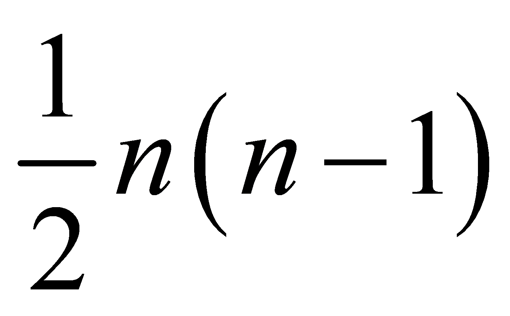
B．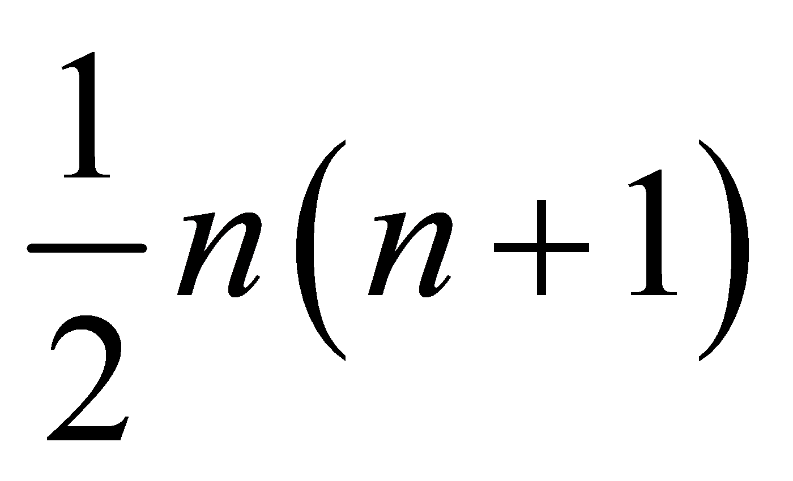
C． D．
D．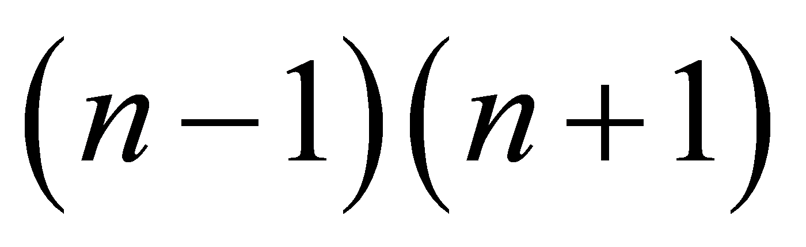
【答案】A
【分析】本题考查了探究规律，两条直线相交，最多有
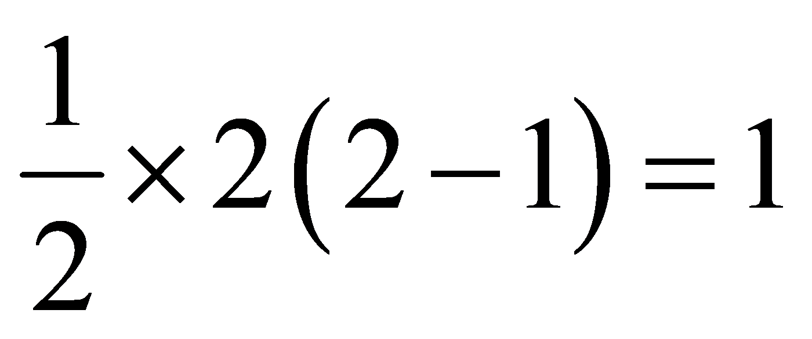
个交点，三条直线两两相交，最多有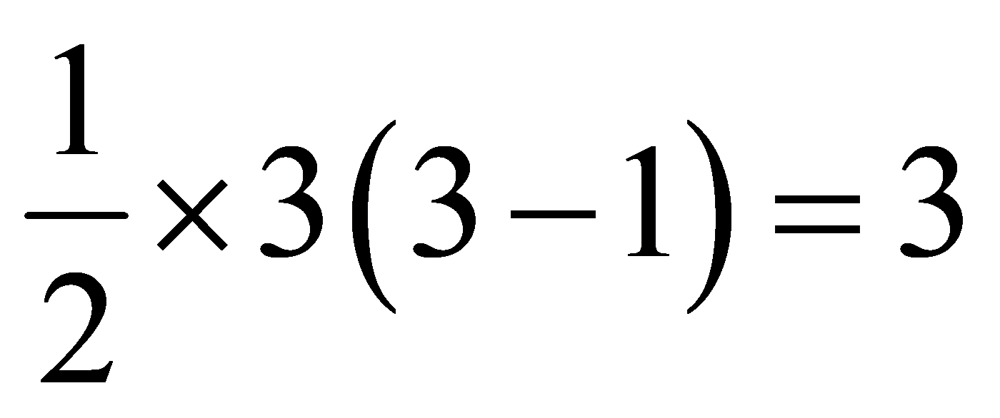
个交点，四条直线两两相交，最多有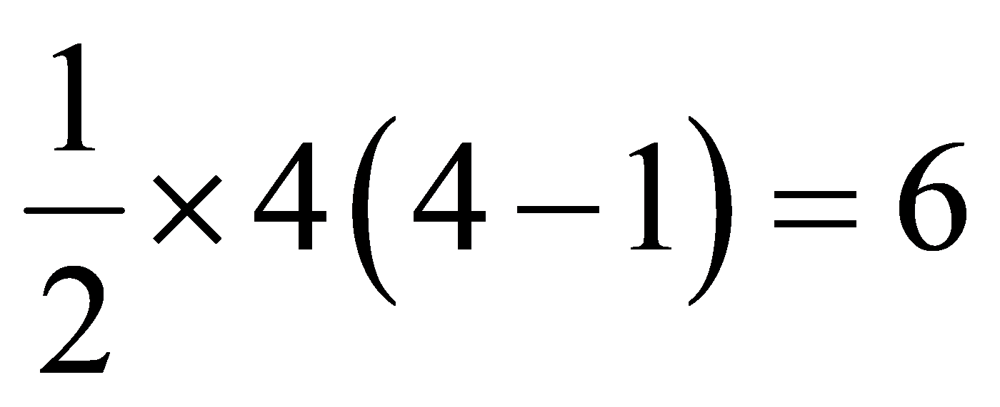
个交点，据此可求解；找出规律是解题的关键．【详解】解：两条直线相交，最多有个交点，
三条直线两两相交，最多有个交点，
四条直线两两相交，最多有个交点．．．
按照此规律，条直线两两相交，最多交点个数是 ，
，
故选：A．
二、填空题
7．（24-25七年级上·全国·课后作业）如图，点A在直线l ，点B在直线l ．

【答案】 上 外
【分析】此题考查了点和直线的位置关系，根据点A和点B的位置判断即可．
【详解】解：点A在直线l上，点B在直线l外．
故答案为：上，外．
8．（24-25七年级下·广东深圳·开学考试）挖地基时在地上画线，先在地上钉两根木桩就可以拉一条线，说明原理 ．
【答案】两点确定一条直线
【分析】此题主要考查了直线的性质，正确把握直线的性质是解题的关键．直接利用直线的性质进而分析得出答案．
【详解】解：挖地基时在地上画线，先在地上钉两根木桩就可以拉一条线，说明原理为两点确定一条直线．
故答案为：两点确定一条直线．
9．（24-25七年级下·湖南长沙·开学考试）如图，已知四条线段a，b，c，d中的一条与挡板另一侧的线段 在同一直线上，请借助直尺判断该线段是
在同一直线上，请借助直尺判断该线段是

【答案】线段a
【分析】本题考查两点确定一条直线，掌握两点确定一条直线是解题关键．根据经过两点有一直线并且只有一条直线即可判断．
【详解】解：如图，
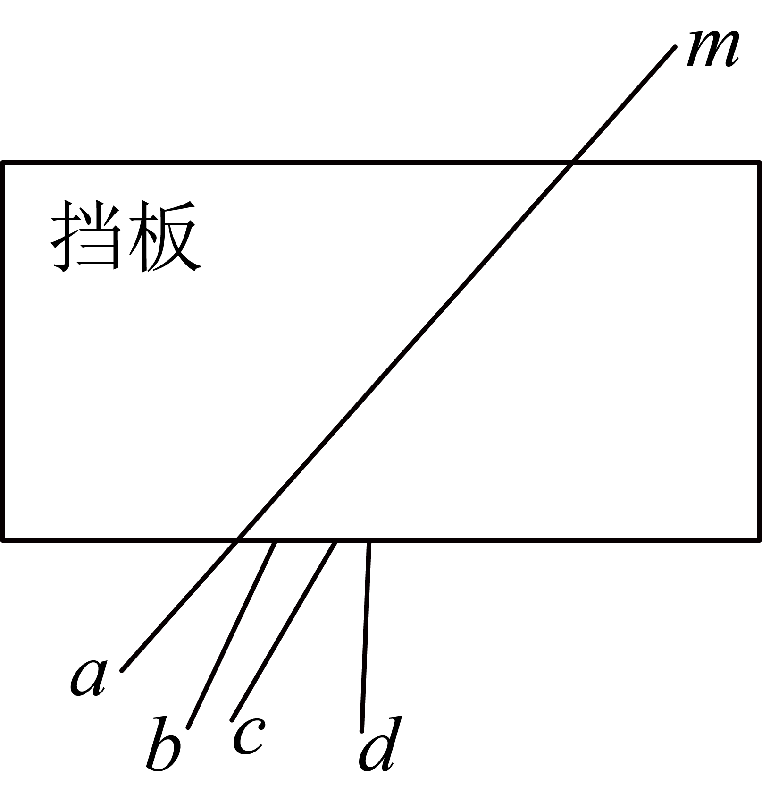
∴线段a与挡板另一侧的线段在同一直线上，
故答案为：线段a．
10．（2025七年级下·全国·专题练习）平面内有四条直线，两两相交，交点最多有m个，最少有n个，则 ．
．
【答案】7
【分析】本题考查了直线的交点问题，代数式求值，掌握直线相交于一点时交点最少为1个，任意n条直线两两相交时交点最多为个是关键．由题意可得四条直线相交于一点时交点最少，任意两直线相交都产生一个交点时交点最多，由此可得出m，n的值，从而得出答案．
【详解】解：根据题意可得：四条直线相交于一点时交点最少，此时交点为1个，即 ；
；
任意两直线相交都产生一个交点时，交点最多，
∴此时交点为：
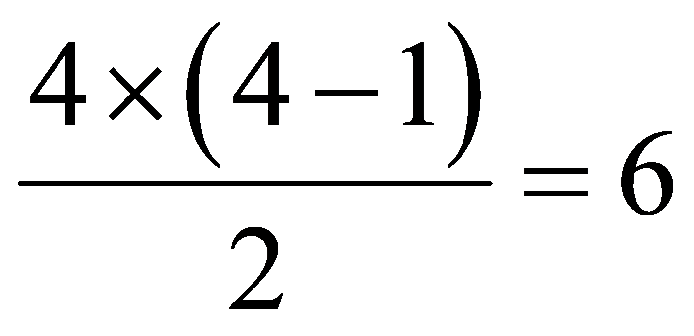
，即 ；
；则
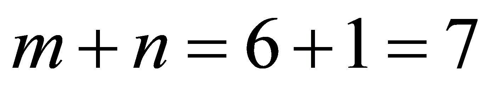
．故答案为7．
11．（24-25七年级上·吉林长春·阶段练习）如图，有下列结论：

①以点 为端点的射线共有5条； ②以点
为端点的射线共有5条； ②以点 为端点的线段共有4条；
为端点的线段共有4条；
③射线 和射线
和射线 是同一条射线； ④直线
是同一条射线； ④直线 和直线
和直线 是同一条直线．
是同一条直线．
以上结论正确的是 ．（填序号）
【答案】①④/④①
【分析】本题考查了直线、射线、线段，根据直线、射线、线段的定义，对结论分析判断即可得解．
【详解】解：①以点A为端点的射线有射线，共有5条，故该结论正确，符合题意；
②以点D为端点的线段有线段，共有5条，故该结论错误，不符合题意；
③射线和射线不是是同一条射线，故该结论错误，不符合题意；
④直线和直线是同一条直线，故该结论正确，符合题意．
综上所述，其中正确的结论是：①④．
故答案为：①④．
12．（24-25七年级上·全国·课后作业）如图A，B，C，D为直线l上的四个点，则图中共有 条线段，它们分别是 ，图中共有 条射线．若直线l上有五个点，则共 条线段， 条射线．若直线l上有六个点，则共有 条线段， 条射线．

【答案】 6 ， ，，，， 8 10 10 15 12
，，，， 8 10 10 15 12
【分析】本题考查了线段和射线的有关知识，读懂题目信息，并学会准确数出线段和射线的条数，做到不重不漏是解题的关键．
结合图形，直接数出线段，射线的个数即可．
【详解】解：图中共有6条线段，它们分别是，，，，，；
图中共有8条射线；
若直线l上有五个点，则共10条线段，10条射线；
若直线l上有六个点，则共有15条线段，12条射线．
故答案为：6；，，，，，；8；10；10；15；12．
三、解答题
13．（24-25七年级上·四川泸州·阶段练习）如图，已知A、 、
、 、四点，请按下列要求画图：（不写作法，保留作图痕迹）．
、四点，请按下列要求画图：（不写作法，保留作图痕迹）．

(1)画直线；
(2)画射线；
(3)画线段，在上求作点 ，使点到A、两点的距离之和最小．
，使点到A、两点的距离之和最小．
【答案】(1)见详解
(2)见详解
(3)见详解
【分析】（1）过A、D两点作直线即可；
（2）过A、B两点作射线即可；
（3）连接B、D两点得线段，再连接交于P点，则点P到A、C两点的距离之和最小．
【详解】（1）解：如图,直线即为所求；
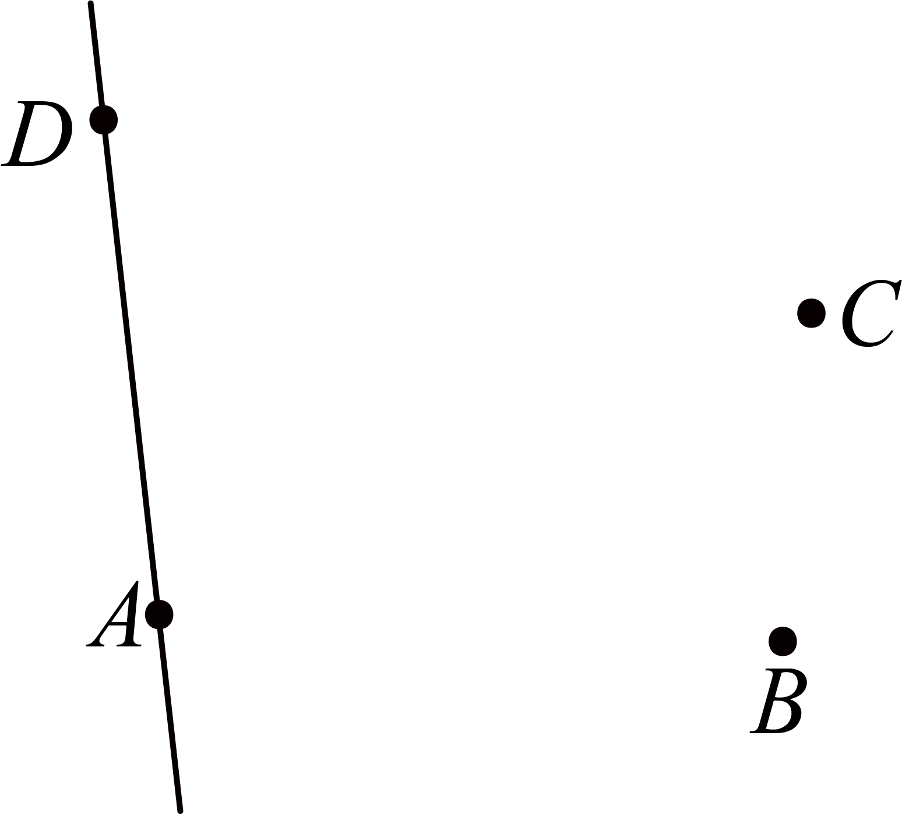
（2）解：如图，射线即为所求；
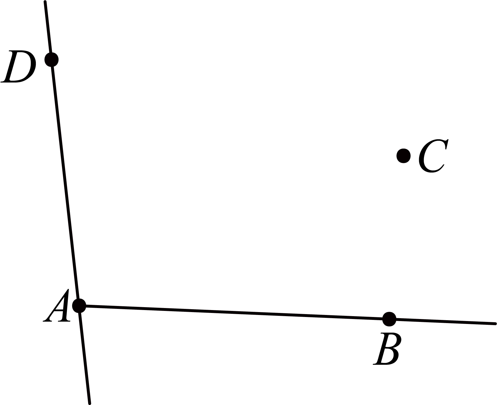
（3）解：如图，画线段，连接交于P点，P点即为所求．
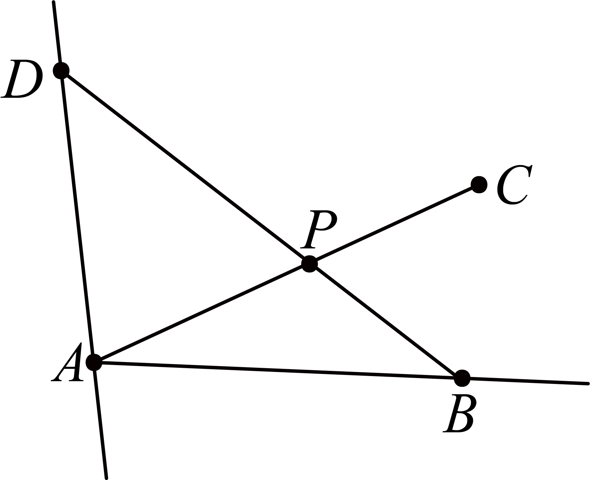
【点睛】本题考查了作图-复杂作图、直线、射线、线段、两点间的距离，解决本题的关键是掌握两点之间，线段最短．
14．（24-25六年级下·山东淄博·期中）如图，平面内有，，，四点，利用直尺，按照下面的要求完成作图．

(1)连接；
(2)作直线；
(3)作射线；
(4)作出点，使 的值最小．
的值最小．
【答案】(1)见解析
(2)见解析
(3)见解析
(4)见解析
【分析】本题考查的知识点是作图，直线、射线、线段的定义、两点之间线段最短，解题关键是熟练掌握相关知识点．
（1）根据线段的定义画出图形；
（2）根据直线的定义画出图形；
（3）根据射线的定义画出图形；
（4）连接 、
、 交于点，点即为所求．
交于点，点即为所求．
【详解】（1）解：如图，线段 即为所求：
即为所求：
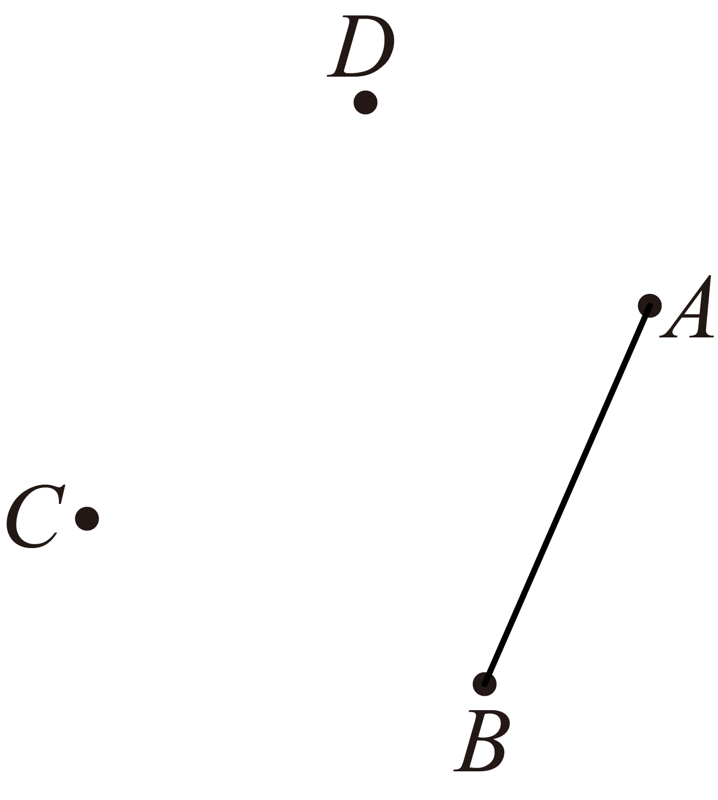
（2）解：如图，直线 即为所求：
即为所求：
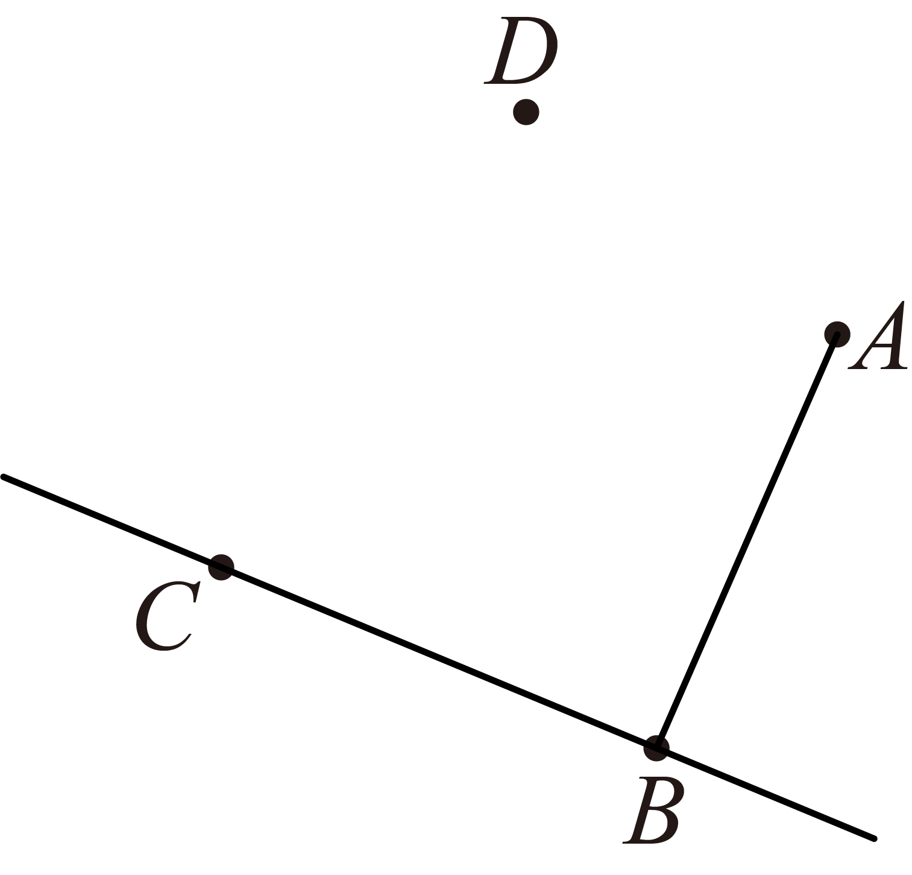
（3）解：射线即为所求：
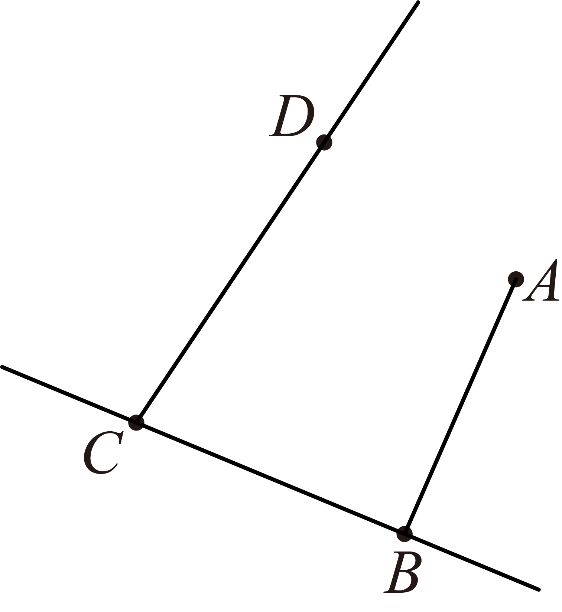
（4）解：如图，点即为所求：
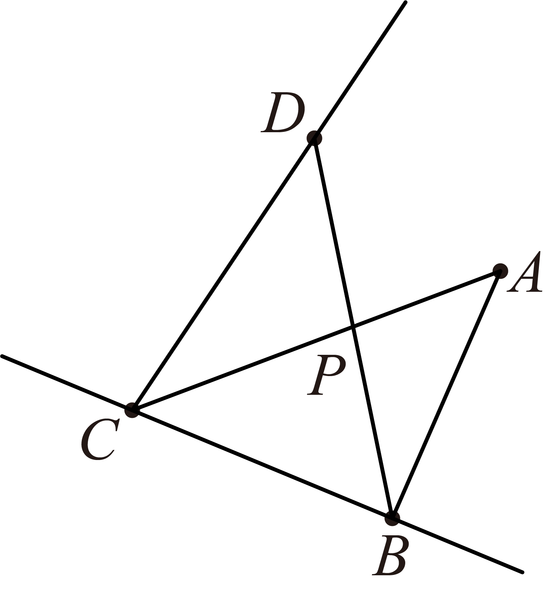
15．（24-25七年级上·贵州贵阳·阶段练习）如图，按要求完成画图及作答：

(1)用适当的语句表述点与直线 的关系：_________；
的关系：_________；
(2)画射线 ，画直线
，画直线 ；
；
(3)连接 ，并反向延长至点，使
，并反向延长至点，使 ．
．
【答案】(1)点在直线外
(2)见解析
(3)见解析
【分析】本题考查射线，直线和线段的作图．熟练掌握射线，直线和线段的定义是解题的关键．
（1）根据点与直线的关系即可填空；
（2）根据直线和射线的定义求解即可；
（3）作射线并反向延长，依次截取两次使即可求解．
【详解】（1）根据题意得，点与直线l的关系：点在直线l外；
（2）如图所示，射线，直线即为所求；
（3）如图所示，点D即为所求；
16．（23-24七年级上·江苏南通·期末）【阅读思考】
如表反映了平面内直线条数与它们最多交点个数的对应关系．
图形 |
| … | ||
直线条数 | 2 | 3 | 4 | … |
最多交点个数 | 1 |
|
| … |


【延伸探究】
（1）按此规律，5条直线相交，最多有______个交点；
（2）平面内的8条直线任意两条都相交，交点数最多有x个，最少有y个，请求出 的值；
的值；
【实践应用】
（3）学校七年级6个班级举行足球联赛，比赛采用单循环赛制（即每两支队伍之间赛一场），当比赛到某一天时，统计出七1，七2，七3，七4，七5五个班级已经分别比赛了5，4，3，2，1场球，请直接写出没有与七6班比赛的班级，并求出还剩的比赛总场数．
【答案】（1）10；（2）29；（3）没有与七6班比赛的班级是七4班和七5班，还剩6场比赛
【分析】本题主要考查了直线交点问题、图形规律探究等内容，熟练掌握相关知识是解题的关键
（1）根据题干分析n条直线，最多有个交点，直接代入即可得解；
（2）代入公式求出交点最多个数，当8条直线交于同一点时，个数最少；
（3）根据单循环赛制的特点，以及各班级已赛场次的信息，逐步推理出班级之间的比赛关系，进而求出未与七6班比赛的班级以及剩余比赛场数．
【详解】解：（1）5条直线相交，最多有个交点，
故答案为：10；
（2）根据题意，最多有个交点，此时 ，
，
当8条直线交于同一点时，交点最少，此时 ，
，
所以；
（3）分析各班级比赛场次信息：
单循环赛制意味着每个班级都要和其余5个班级各赛一场，所以每个班级最多比赛5场，
①七1班赛了5场，这表明七1班与七2、七3、七4、七5、七6班都进行了比赛；
②七5班只赛了1场，由于七1班与所有班级都比赛过，所以七5班这一场比赛就是和七1班进行的，七5班没有和其他班级比赛；
③确定七2班比赛对象：七2班比赛了4场，因为七5班只和七1班比赛，所以七2班除了和七5班没比赛，与七1、七3、七4、七6班都比赛了；
④确定七4班比赛对象：七4班赛了2场，根据前面的推理，七4班的两场比赛是和七1、七2班进行的；
⑤确定七3班比赛对象：七3班比赛了3场，已知七1、七2班与七3班比赛，七5班没和七3班比赛，所以七3班的三场比赛是和七1、七2、七6班进行的（与七4班没有比赛）；通过以上分析可知，没有与七6班比赛的班级是七4班和七5班．
已比赛的场数为：
①七1班与七2、七3、七4、七5、七6班比赛5场；
②七2班与七4、七3、七6班比赛3场（与七1已算在七1班场次中）；
③七3班与七6班比赛1场（与七1、七2重复场次已算）；
④七4班与七1、七2班赛比2场；（全部为重复场次，已算过）
⑤七5班与七1班赛1场；（全部为重复场次，已算过）
⑥七6班与七1、七2、七3班赛3场（全部为重复场次，已算过），总共已赛9场；
6个班级进行单循环比赛，总场数为场，所以还剩下的比赛场数为场；
综上，没有与七6班比赛的班级是七4班和七5班，还剩6场比赛．